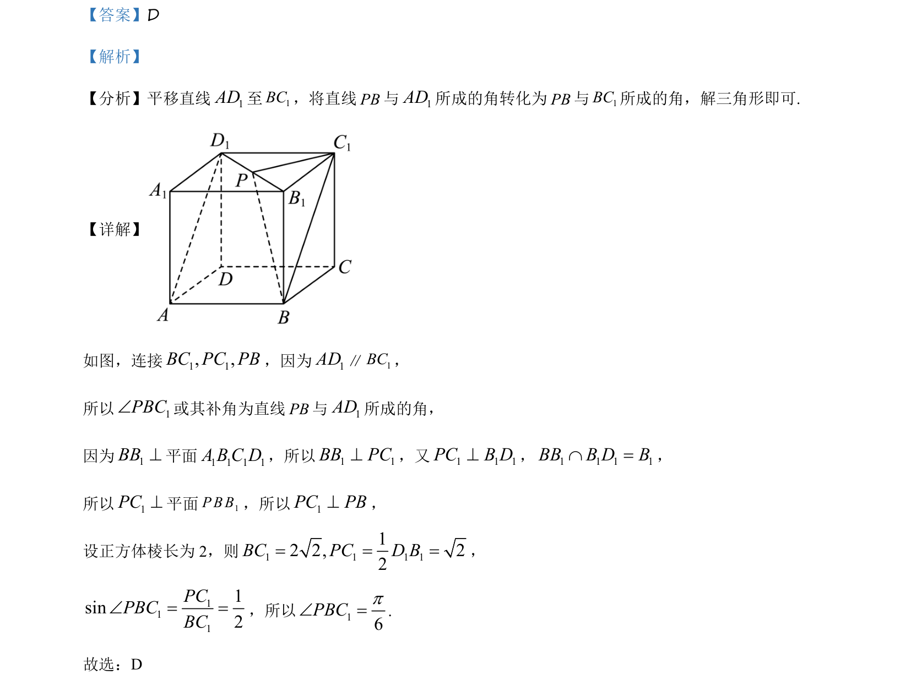

考点：异面直线所成角 平移法 线面垂直 解三角形
本题考查在正方体中通过平移法求异面直线所成角，并利用线面垂直构造直角三角形求解正弦值。

📄 原 PDF 第 3 页：
素材/真题/吉林/2008-2024·（吉林）数学高考真题/2021年高考数学试卷（理）（全国乙卷）（新课标Ⅰ）（解析卷）.pdf
【答案】D 【解析】 【分析】平移直线1AD至1BC，将直线PB与1AD所成的角转化为PB与1BC所成的角，解三角形即可. 【详解】 如图，连接1 1, ,BC PC PB，因为1AD∥1BC， 所以 1PBCÐ或其补角为直线PB与1AD所成的角， 因为1BB^平面 1111DCBA，所以1 1BB PC^，又1 1 1PC B D^，1 1 1 1BB B D BÇ =， 所以1PC^平面 1P B B，所以1PC PB^， 设正方体棱长为 2，则1 1 1 112 2, 22BC PC D B= = =， 1111sin2PCPBCBCÐ = =，所以 16PBCpÐ =. 故选：D